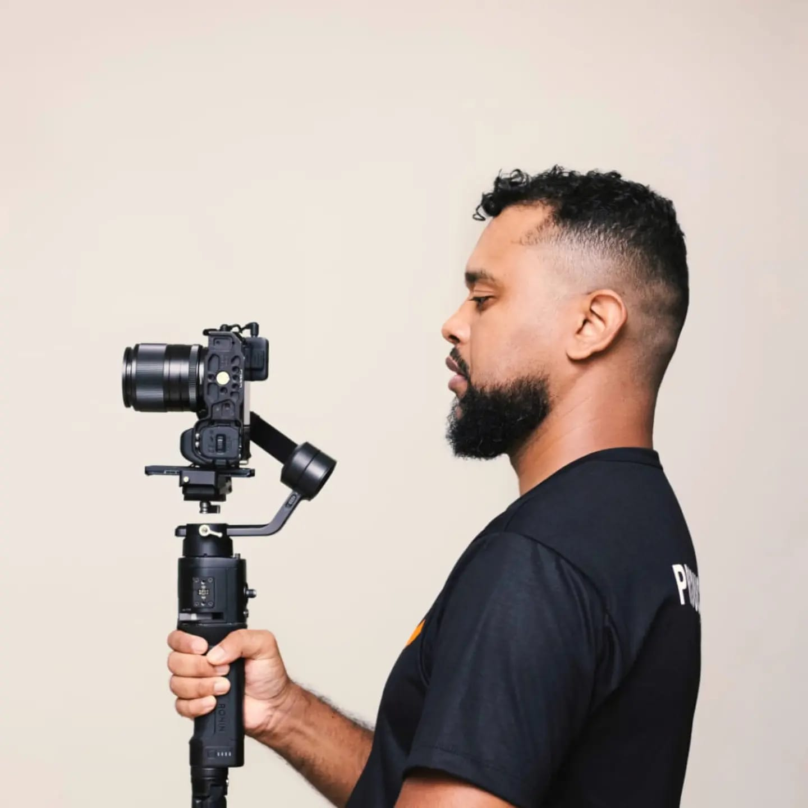
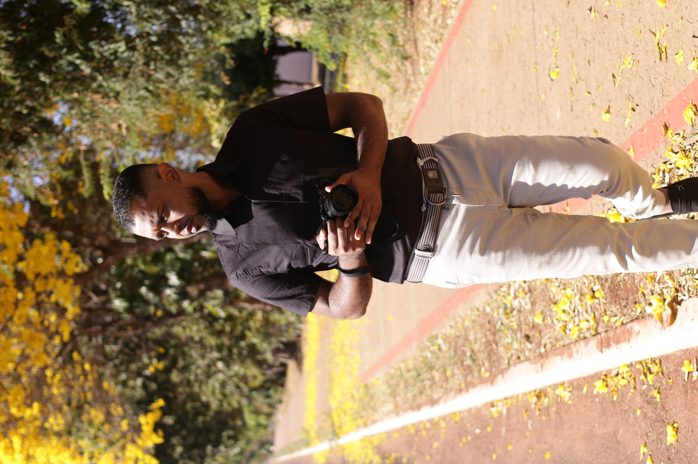

Ituiutaba · Triângulo Mineiro
Direção, captação em 4K, edição no ritmo da música e sound design que arrepia. Do documentário ao aftermovie, cada corte conta uma história.
4K
Captação em Log
Direção
Roteiro e storytelling
Ritmo
Edição na batida
Som
Sound design
Portfólio
Nenhum vídeo nesta categoria ainda. Em breve tem novidade! 🎬

Sobre mim
Sou filmmaker e editor em Ituiutaba-MG, por trás da JOHN FLIX Videomaker. Formado em documentário pelo Instituto Federal de Goiás e em audiovisual pelo Senac, levo olhar de cinema pra cada projeto.
Filmo congressos de dança, eventos, rodeios e comerciais, sempre buscando o momento que faz a pessoa sentir de novo quando assiste.
Serviços
Filmagem em 4K com perfil Log, gimbal e drone. Mais detalhe e mais liberdade na cor.
Whooshes, risers e foley no lugar certo. O som que faz o vídeo ganhar vida.
Cor de cinema no DaVinci Resolve, com identidade visual para cada projeto.
Cortes na batida, speed ramp, storytelling e formatos prontos para Reels e TikTok.
Me conta a ideia, a data e o local. Eu respondo rapidinho pelo WhatsApp.
Pedir orçamento(34) 98428-4990